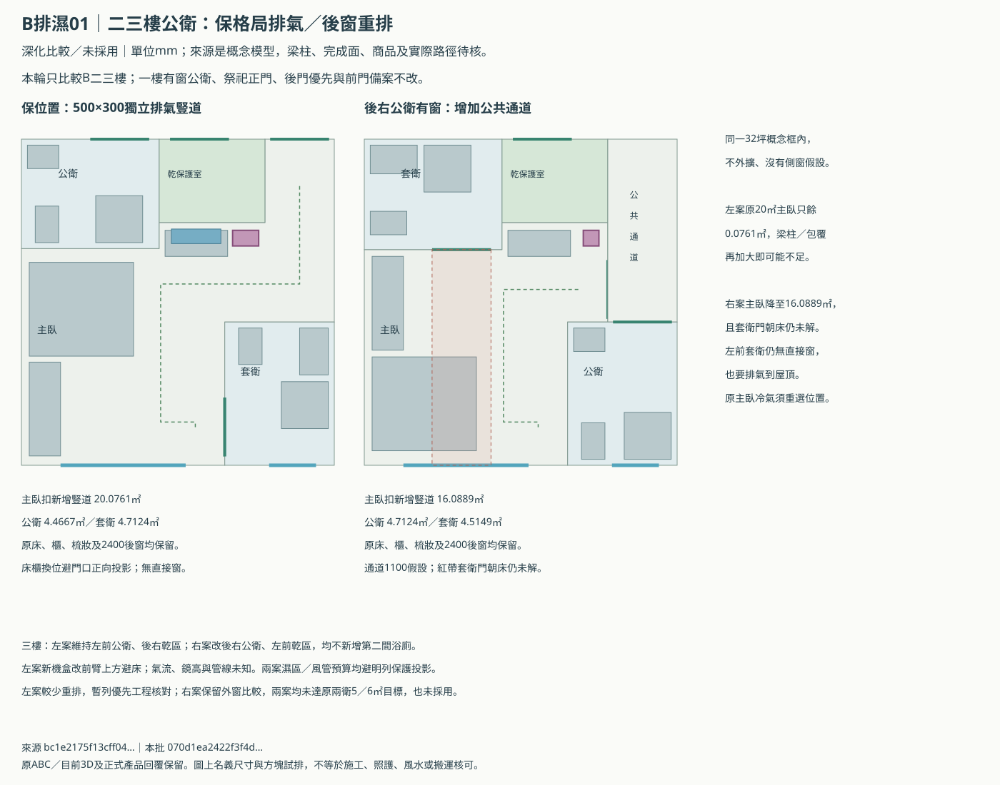
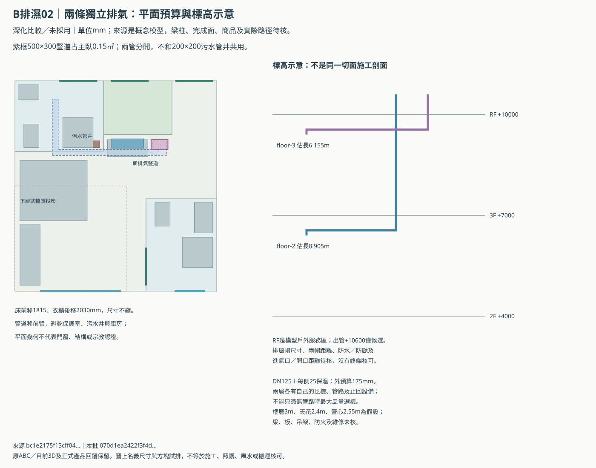
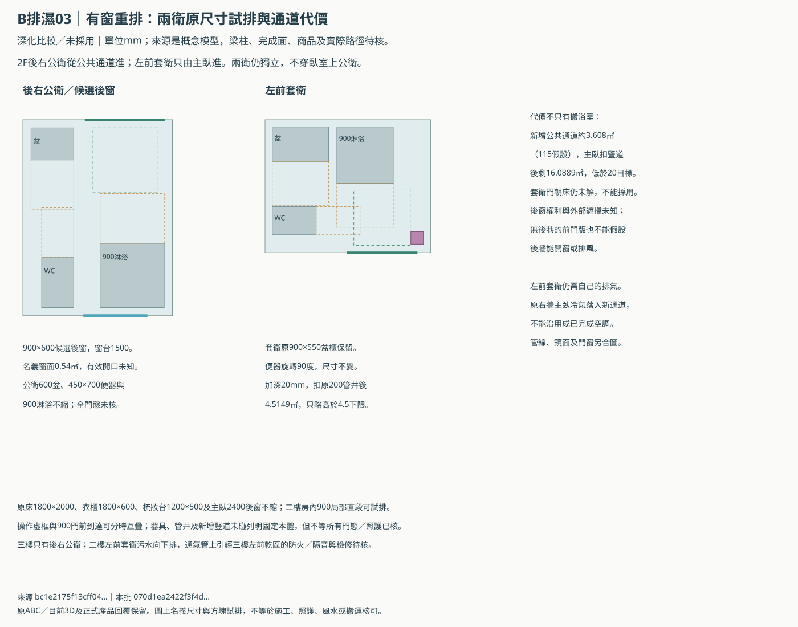

B二三樓公衛：先比外窗的代價，再核獨立排氣
同一6000×17630mm概念框內，補上後右有窗公衛的原尺寸器具與獨立到達；保格局方向則補兩層分開排氣到屋頂的候選。
獨立比較，尚未採用，也不是風水、通風或建照核可。有窗重排案的套衛門朝床仍未解，不列可採用方案。 本批沒有改一樓有窗公衛、祭祀正門、後門優先或前門備案；原3D與149份控制保留。新方案尚未由Claude審閱，不能繼承上輪局部共識或舊畫面passed。
建議暫保主臥20㎡，先核屋頂排氣
| 項目 | 保格局、獨立屋頂排氣 | 後右有窗公衛重排 |
|---|---|---|
| 主臥扣新增豎道 | 20.0761㎡ | 16.0889㎡ |
| 二樓公衛／套衛 | 4.4667／4.7124㎡ | 4.7124／4.5149㎡ |
| 一般公衛外窗 | 沒有；機械排氣待工程核圖 | 900×600後窗候選，合法與有效開口未知 |
| 三樓 | 左前公衛、後右乾區；不新增套衛 | 後右公衛、左前乾區；不新增套衛 |
| 工程代價 | 新500×300豎道0.15㎡，兩層各自管路 | 搬兩衛、增通道、改門，套衛仍需300×300排氣豎道 |
| 門口朝床初篩 | 床前移、衣櫃後移，套衛門正向投影未碰床 | 左前套衛後門投影碰床，尚未解決 |
| 原要求 | 主臥暫守20、餘量僅0.0761；兩衛原5／6未達 | 主臥未達20；兩衛原5／6也未達，尚未同意取捨 |
後窗方案要讓訪客從右側公共通道進公衛，不能借主臥當走道；所以主臥由20.2261㎡降至輪廓16.1789㎡，再扣0.09㎡排氣豎道後為16.0889㎡。這是已試排原尺寸家具的比較，仍沒有替屋主接受縮房。
保格局方案新增500×300mm排氣豎道，原主臥扣0.15㎡後只剩20.0761㎡，餘量很薄。該預算包括兩條DN125與每側25mm保溫的示意外廓，實際包覆、防火及檢修若更大，20㎡可能守不住。
逐門初篩發現，原套衛門正向投影會碰床，與門片碰撞是不同問題。本批保房間位置案將床前移1815mm、衣櫃後移2030mm，尺寸不縮；排氣豎道移至主臥前臂，正向投影不再碰床。實際斜視線、鏡面、窗扇與門組仍待核。有窗案原尺寸家具雖放得下，套衛門朝床尚未解決，不因關門就視為已避開。
床前移後，原右牆機盒可能直吹床；本批另畫前臂前壁上方的950×280×280mm冷氣盒候選，平面朝後投影避床、也未碰排氣外廓。它在梳妝區上方，鏡高、實機、冷媒／冷凝水、氣流與維修都需重新核對。
原主臥20／公衛5／套衛6㎡目標及兩衛3.6／4.5㎡下限不變；兩案沒有完成全部原要求。每面115mm內縮仍只是敏感度模型，不是實測或合法淨面積。
三張新圖





機械排氣有具體預算，性能仍待核
二樓與三樓分別用自己的排氣管及止回設備到模型RF戶外服務區，不共用污水通氣管、樓梯、乾保護室或封閉夾層。兩管中心線估長8.905m／6.155m，尚未計實際彎頭等效阻力或風帽損失。
管道與豎道的列明平面預算避祭祀保護區、武轎庫及原污水管井，沒有核定穿梁或穿板。新機盒位置、梁底、樓板、防火包覆、防水、檢修與屋頂出風帽另需正式圖說。
以公衛扣污水管井4.4667㎡、天花2.4m估容積10.72m³，以下只是工程比較假設，不是法定換氣標準或除黴保證：
| 工程比較假設 | 本案估算需要送出的風量 |
|---|---|
| 8次／小時 | 85.8m³/h |
| 10次／小時 | 107.2m³/h |
| 12次／小時 | 128.6m³/h |
例如120m³/h經125mm內徑管，直管平均流速約2.72m/s；這不能替代實際阻力與風機曲線。需確認門關時的補氣、安裝後風口實測風量、噪音與震動，不能只看無管路時的最大風量。
補氣從一般公共乾區進，不從神明堂乾保護室或其他浴廁串氣。室外高濕時，通風未必能降低室內含濕量；防水、乾濕分區、保溫與必要的除濕仍要一起檢查，不保證有窗或有風機就不發黴。
側窗不能預設，後窗也要核對實際外部條件
現有資料只確認側界可能共壁，沒有地籍棟距或合法開窗依據，因此沒有把側窗畫成可用。若正式圖證明左側可合法對外開窗，才可能保原位置而少改格局；也沒有斷言側窗永久不可行。
後窗方案使用原後牆900×600mm候選，名義窗面0.54㎡不能當有效通風開口；框料、開啟方式、紗網、防雨及外部遮擋尚未核。後巷可搬轎也不等於合法開窗；無後巷前門版更不能借用後巷權利。
後右公衛有窗，移到左前的套衛仍須獨立屋頂排氣。一般浴廁機械通風與高雄厝申報浴廁的直接外窗條件要分開核對，本輪沒有取得任何申報資格或法規核可。
暫保房間位置，先取得能否落實的工程資料
| 下一步資料 | 要回答的問題 |
|---|---|
| 側界／後界外牆與合法開口 | 先核側窗是否有條件；若可合法開側窗，才可能有更小改法 |
| 結構與天花 | 穿板、防火、梁底與檢修包覆能否留在預算內，主臥20㎡會不會再不足 |
| 風機及管道 | 按實際阻力核P-Q曲線，再核噪音、補氣、保溫、防雨及防颱 |
| 面積與外窗偏好 | 兩案都有代價；尚未替屋主降低主臥／衛浴目標或接受無窗公衛 |
偏好與工程回覆空表／全部坐標、計算與來源／上輪祭祀、管井與前後門比較／說明文件。
屋主已確認武轎不必進神明堂、不禁轎路上方浴廁污水管、不禁庫房上方臥室；其他祭祀／乾背櫃保護規則照舊。本輪偏好尚未答覆，沒有因繼續工作就改成採用。
bc1e2175f13cff043deeb725e190a3b59908810f58661d9efadec05efbca9a5e本批
070d1ea2422f3f4d8c72ad481a20edaad057ddfd094f99b5ddf2c43fd26283cc｜靜態比較，沒有瀏覽器或WebGL驗收。